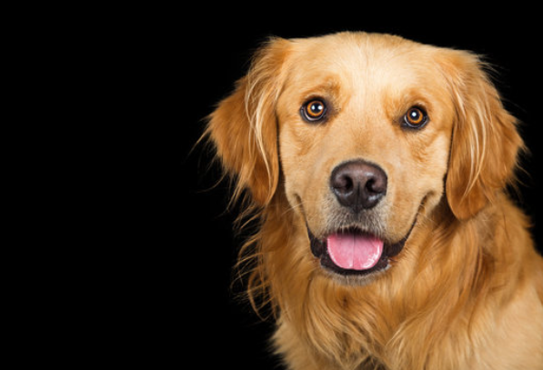

~Gato (♂) / Gata (♀)~
Los gatos | pasan | entre | 12 y 16 | horas | al día | durmiendo.
Click for translation (word-wise)
Cats | spend | between | 12 and 16 | hours | a day | sleeping.

~Perro (♂) / Perra (♀)~
Los perros | tienen | un sentido del olfato | entre 10,000 y 100,000 veces | más agudo | que el de los humanos.
Click for translation (word-wise)
Dogs | have | a sense of smell | 10,000 to 100,000 times | sharper | than that of humans.

~Oveja~
Las ovejas | tienen | una excelente memoria | y | pueden recordar | a otros miembros del rebaño | durante años.
Click for translation (word-wise)
Sheep | have | excellent memory | and | can remember | other members of the flock | for years.